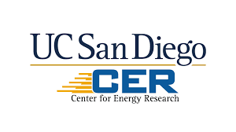
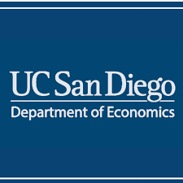
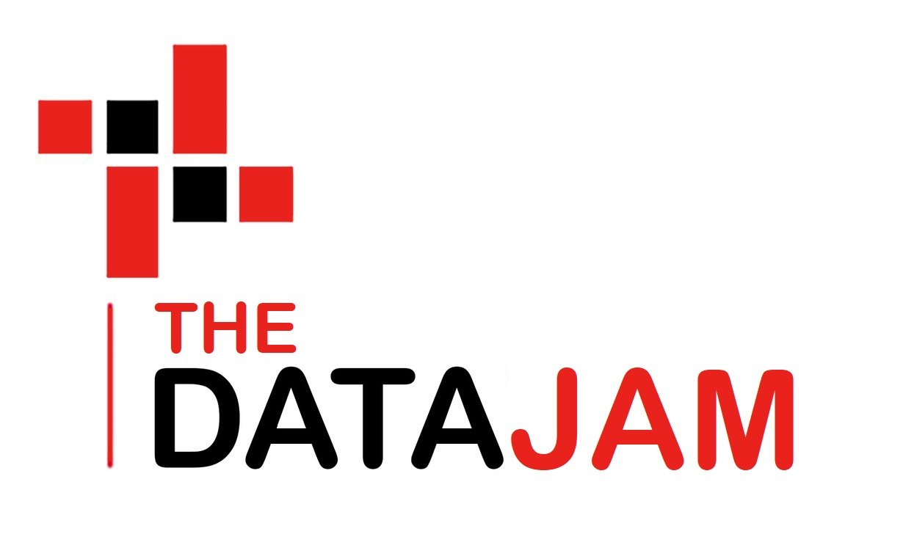

Bachelor of Science in Data Science (Expected Graduation: June 2027)
Relevant Coursework: Practice of Data Science, Data Management, Theoretical Foundations of Machine Learning, Data Structures and Algorithms, Linear Algebra
Experience

Data Analysis & Development Intern
UC San Diego Center for Energy Research, La Jolla, CA
TEC App

Undergraduate Research Assistant
UC San Diego Economics Research Lab, La Jolla, CA
Conducting data analysis in Python to study Bayesian behavior evolution by state realization in a laboratory experiment with 120 participants across 80 survey rounds.
Developing data visualizations with Matplotlib to cluster respondents as Learners or Imitators based on optimal choice shares and moving averages.

Team Mentor
The DataJam, San Diego, CA
Guided 10 high school students in developing a data science project analyzing crime patterns in San Diego using Microsoft Excel and Python.
Designed curriculum resources for future mentors to help students identify correlation versus causation and interpret results.
Teaching Assistant
Art of Problem Solving, Santa Clara, CA
Tutored in summer courses for 25 hours/week for elementary to high school-level math. Created an interactive learning environment and graded student work.
Hosted office hour sessions and created training materials for new hires, receiving positive feedback from students.